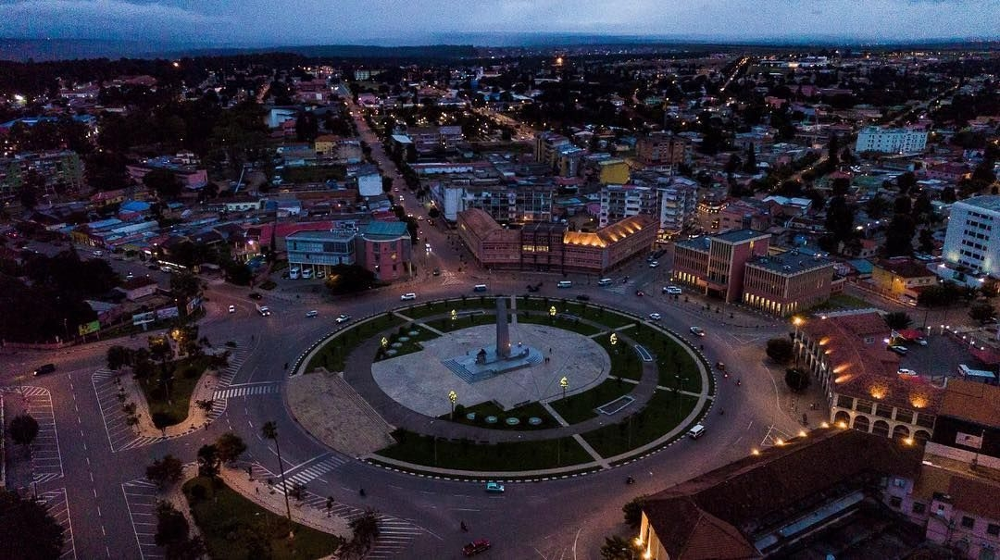

Huambo

Sobre Huambo
Huambo é uma província localizada na região central de Angola. A sua capital é a cidade do Huambo, também conhecida historicamente como Nova Lisboa.
Conhecida pelas suas terras férteis e clima ameno, a província é uma das regiões importantes para a produção agrícola e o desenvolvimento económico do país.
História
A história do Huambo está ligada ao antigo reino do Bailundo e a outras comunidades da região central de Angola.
Durante o período colonial, a cidade do Huambo ganhou importância com a construção do caminho de ferro e o desenvolvimento das atividades comerciais e administrativas.
Economia
A agricultura é uma das principais bases económicas da província. Destacam-se a produção de milho, batata, feijão, hortícolas e outros produtos agrícolas.
O comércio, a pecuária, a indústria e os transportes também contribuem para a economia provincial.
Cultura e Tradições
Huambo possui uma identidade cultural marcada pelas tradições do povo Ovimbundu, com destaque para a música, danças, gastronomia, artesanato e manifestações comunitárias.
Identidade
Huambo representa uma região de grande valor histórico, agrícola e cultural, contribuindo para a diversidade e o desenvolvimento de Angola.
Voltar às 21 províncias